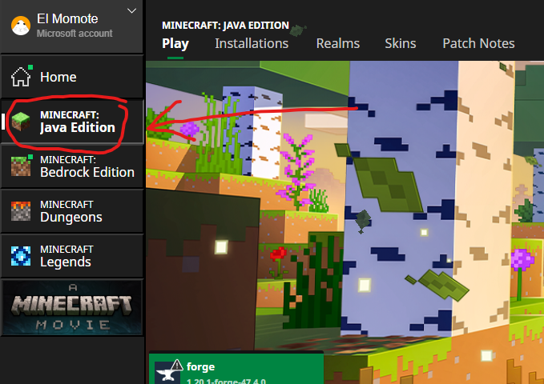
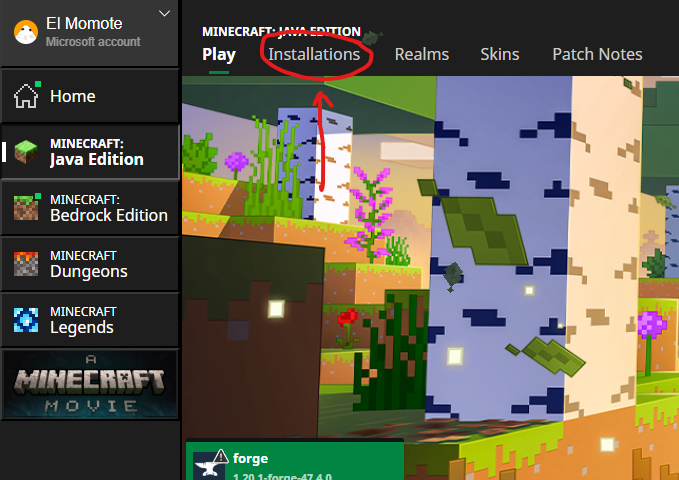
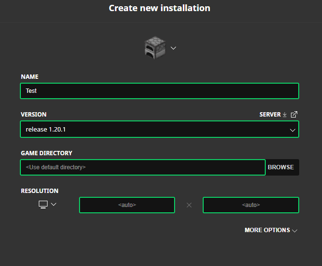
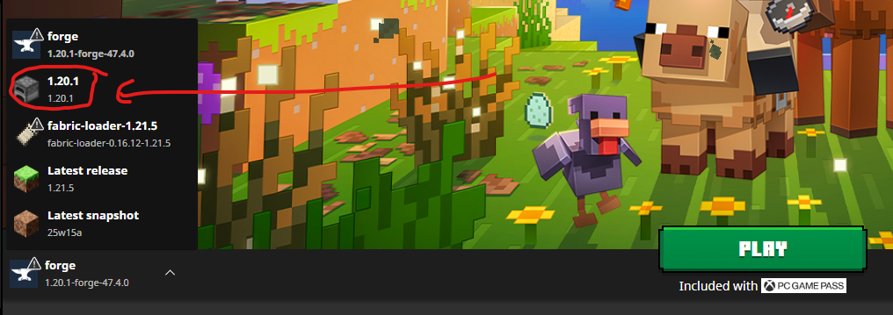
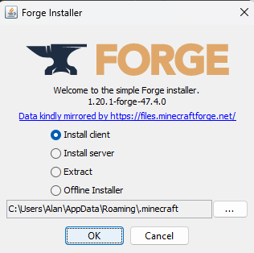

DaBoysMcGuides
Getting started
- Make sure you have minecraft installed or follow guide "Installing Minecraft Java"
- Make sure you have forge installed or follow guide "Installing Forge"
- Make sure to have the bare minimum mods installed or follow guide "Getting the required mods"
- [Optional] Make sure to have the recommended resource packs or follow guide "Getting the recommended resource packs"
Installing Minecraft Java
-
Download Minecraft from
minecraft.net or Microsoft Store App
- Open the Minecraft Launcher app
- Sign in with your Xbox account
-
Select Minecraft Java Edition

-
Click the "Installations" section

-
Choose "New Installation"

- Configure the installation
- Name: <any name you choose>
- Version: 1.20.1 (release)
- Game directory: leave as default
- Resolution: leave as default

- Click "Create" and wait for installation
- Go back to the main Minecraft Java page
-
Choose version 1.20.1 from the dropdown

- Click "Play" to load the game
- Exit the game and launcher once loaded
Installing Forge
-
Download Forge installer from:
https://files.minecraftforge.net/net/minecraftforge/forge/index_1.20.1.html
- Open the Forge installer (.jar file)
- Accept any security warnings
-
Install for "Client" (default option)

- Go back to Minecraft Launcher
- Choose the new "Forge 1.20.1" profile from the dropdown
- Click "Play" to launch
- Your game is now ready for mods!